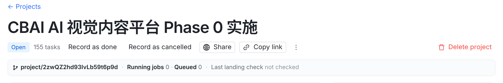
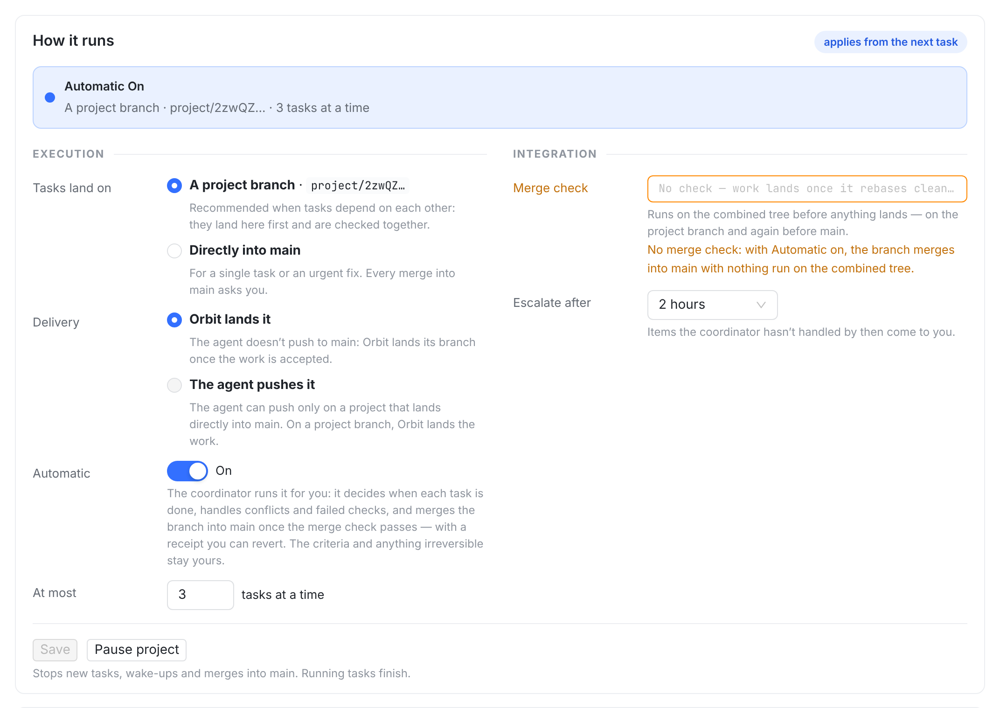
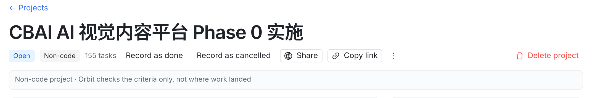
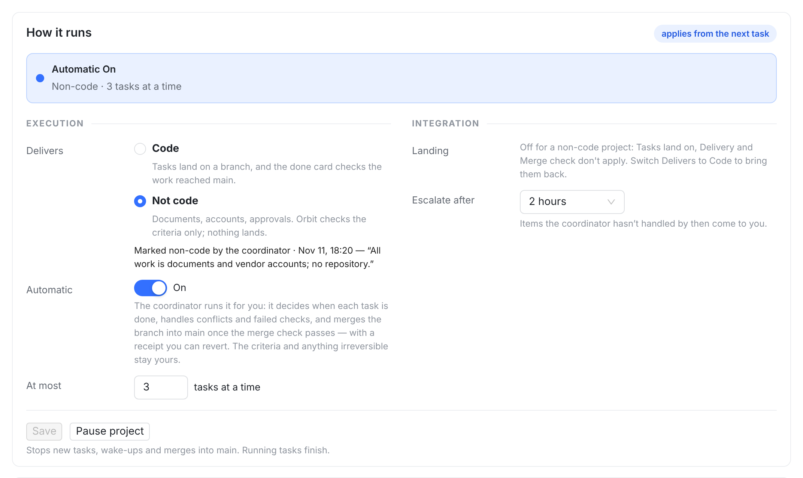

Tasks land on
A project branch · project/2zwQZ…
Directly into main
The done card will check where work landed again. 155 tasks ran without a branch; they will show as “Ran without a branch”.
The done card stops reading where work landed. Work already on project/2zwQZ… stays there.




| 情况 | 项目页 | done 卡 / 汇总 |
|---|---|---|
| 未标记（默认） | Delivers = Code；落地设置照旧 | 照读落地；shared 无分支 → 黄色 “Ran without a branch” |
| 协调者标 Not code | 出处 “by the coordinator · 时间 · 理由”；Not code 选中 | 顶部说明 + Change；行和汇总没有落地字样；Record as done 不存落地缺口 |
| owner 标 / 清 | 确认后立即写；出处 “by you” | 同上 / 回到读落地 |
| 开工前（How it runs 还不显示） | Start 卡同一行 Delivers（待你定 1） | — |
| 已有落地记录再标 Not code | 允许；分支和收据都留着 | 不再读落地 |